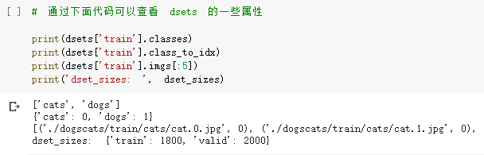
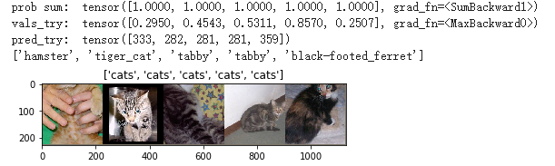

学习笔记-Transfer_VGG_for_dogs_vs_cats
对于PyTorch的学习，基于Colab平台，主要内容来自于OUCTheoryGroup
1 | import numpy as np |
数据处理
训练集包含1800张图(猫的图片900张，狗的图片900张)，测试集包含2000张图
datasets 是 torchvision 中的一个包，可以用做加载图像数据。它可以以多线程（multi-thread）的形式从硬盘中读取数据，使用 mini-batch 的形式，在网络训练中向 GPU 输送。在使用CNN处理图像时，需要进行预处理。图片将被整理成 224×224×3 的大小，同时还将进行归一化处理。
torchvision 支持对输入数据进行一些复杂的预处理/变换 （normalization, cropping, flipping, jittering 等）。具体可以参照 torchvision.tranforms 的官方文档说明。
1 | normalize = transforms.Normalize(mean=[0.485, 0.456, 0.406], std=[0.229, 0.224, 0.225]) |

1 | loader_train = torch.utils.data.DataLoader(dsets['train'], batch_size=64, shuffle=True, num_workers=6) |
1 | # 显示图片的小程序 |
创建 VGG Model
torchvision中集成了很多在 ImageNet （120万张训练数据） 上预训练好的通用的CNN模型，可以直接下载使用。
在本课程中，我们直接使用预训练好的 VGG 模型。同时，为了展示 VGG 模型对本数据的预测结果，还下载了 ImageNet 1000 个类的 JSON 文件。
在这部分代码中，对输入的5个图片利用VGG模型进行预测，同时，使用softmax对结果进行处理，随后展示了识别结果。可以看到，识别结果是比较非常准确的。
1 | # !wget https://s3.amazonaws.com/deep-learning-models/image-models/imagenet_class_index.json |
这里是直接使用了已经训练好的VGG网络，并且下载的JSON文件中包含了 ImageNet 1000 个类，我们可以直接将预测图片输入到网络中，然后 对结果进行一定的处理，就能够得到预测信息

修改最后一层，冻结前面层的参数
VGG 模型网络由三种元素组成：
- 卷积层（CONV）是发现图像中局部的 pattern
- 全连接层（FC）是在全局上建立特征的关联
- 池化（Pool）是给图像降维以提高特征的 invariance
我们的目标是使用预训练好的模型，因此，需要把最后的 nn.Linear 层由1000类，替换为2类。为了在训练中冻结前面层的参数，需要设置 required_grad=False。这样，反向传播训练梯度时，前面层的权重就不会自动更新了。训练中，只会更新最后一层的参数。
1 | print(model_vgg) |
输出：
1 | VGG( |
训练并测试全连接层
包括三个步骤：第1步，创建损失函数和优化器；第2步，训练模型；第3步，测试模型
1 | ''' |
1 | def test_model(model,dataloader,size): |
可视化模型预测结果（主观分析）
主观分析就是把预测的结果和相对应的测试图像输出出来看看，一般有以下几种方式：
- 随机查看一些预测正确的图片
- 随机查看一些预测错误的图片
- 预测正确，同时具有较大的probability的图片
- 预测错误，同时具有较大的probability的图片
- 最不确定的图片，比如说预测概率接近0.5的图片
1 | # 单次可视化显示的图片个数 |